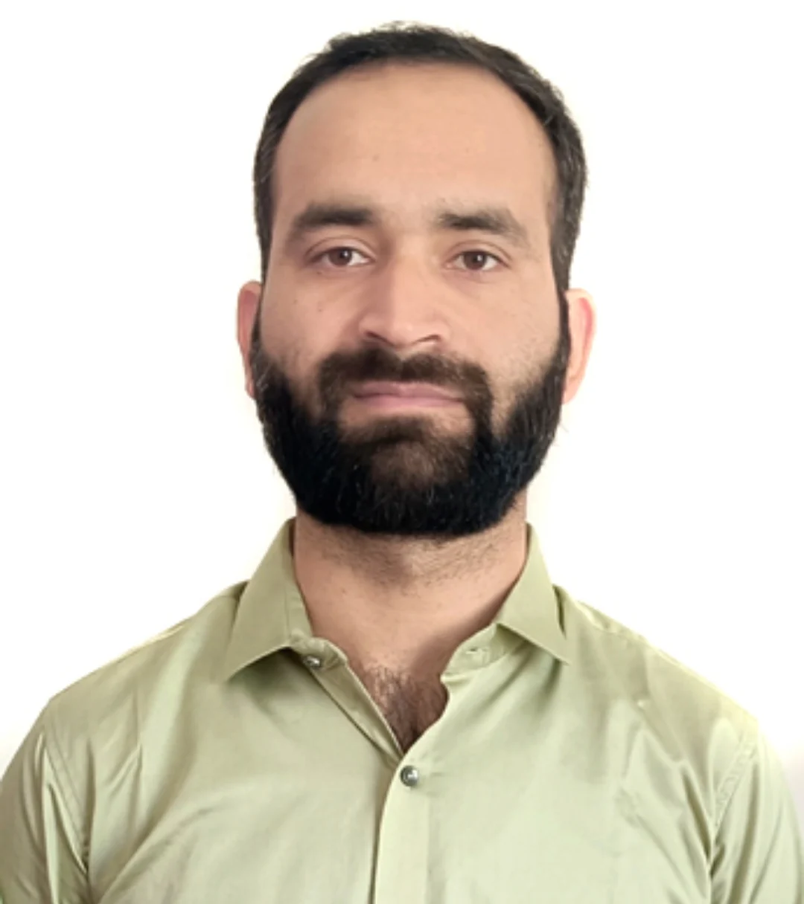

Fluvial Sediment Transport
Threshold of sediment motion, movability number, bed configuration, grain protrusion, sediment non-uniformity, and stability of coarse material in natural streams.
Civil & Water Resources Engineering
Assistant Professor, NIT Srinagar
Researching the movement of sediment in natural streams and designing resilient, sustainable systems for urban stormwater management.

Research focus
From sediment thresholds to water-sensitive cities.
About
Dr. Aamer Majid Bhat is an Assistant Professor in Civil Engineering at the National Institute of Technology Srinagar. His work connects fundamental hydraulics with applied solutions for rivers and cities.
His doctoral research examined dimensionless variables governing the threshold of sediment motion in natural streams. As a postdoctoral fellow at IIT Gandhinagar, he expanded his research into sustainable urban drainage, roadside curb inlets, vegetated swales, green infrastructure, and urban flood mitigation.
He teaches core civil engineering subjects, mentors undergraduate projects, and combines analytical, experimental, numerical, and geospatial methods in his work.
Research
Investigating how flow interacts with sediment, infrastructure, and the built environment.
Threshold of sediment motion, movability number, bed configuration, grain protrusion, sediment non-uniformity, and stability of coarse material in natural streams.
Hydrologic-hydraulic performance of swales, curb-inlet design, sustainable drainage, green infrastructure, SWMM modelling, and climate-resilient stormwater systems.
Doctoral thesis
Experience & education
Academic appointment
National Institute of Technology Srinagar
Teaching undergraduate and postgraduate courses, supervising hydraulics and water-quality laboratories, and mentoring final-year civil engineering projects.
Postdoctoral research
Indian Institute of Technology Gandhinagar
Investigated roadside curb inlets, vegetated swales, green infrastructure, and hydraulic-hydrologic approaches to sustainable stormwater management.
Teaching
National Institute of Technology Srinagar
Supported B.Tech and M.Tech laboratory experiments and tutorials in civil and water resources engineering.
Water Resources Engineering
National Institute of Technology Srinagar
Publications
A. Sabut, A. M. Bhat, I. M. Tripathi, and P. K. Mohapatra · Journal of Hydrologic Engineering, 31(2)
DOI: 10.1061/JHYEFF.HEENG-6677I. M. Tripathi, S. Kumar, A. Modi, A. M. Bhat, et al. · Water Resources Management, 40(3)
DOI: 10.1007/s11269-025-04377-2A. Sabut, A. M. Bhat, and P. K. Mohapatra · Water-Energy Nexus, 9
DOI: 10.1016/j.wen.2025.12.001A. M. Bhat, I. M. Tripathi, P. K. Mohapatra, and C. Bhagat · Environmental Conservation
DOI: 10.1017/S0376892925100222A. M. Bhat, I. M. Tripathi, and P. K. Mohapatra · Watershed Ecology and the Environment
DOI: 10.1016/j.wsee.2025.05.003A. M. Bhat, P. K. Mohapatra, and I. M. Tripathi · Next Research
DOI: 10.1016/j.nexres.2025.100251A. M. Bhat, P. K. Mohapatra, and I. M. Tripathi · Total Environment Advances, 12
DOI: 10.1016/j.teadva.2024.200118A. M. Bhat, M. A. Ahanger, and P. K. Mohapatra · Ocean Science Journal, 58(4)
DOI: 10.1007/s12601-023-00112-3A. M. Bhat, M. A. Ahanger, and P. K. Mohapatra · Journal of the Geological Society of India, 99(9)
DOI: 10.1007/s12594-023-2462-2A. M. Bhat, M. A. Ahanger, and P. K. Mohapatra · International Journal of Hydrology Science and Technology, 15(1)
DOI: 10.1504/IJHST.2023.127890A. M. Bhat and M. A. Ahanger · Modeling Earth Systems and Environment, 8
DOI: 10.1007/s40808-021-01122-7A. M. Bhat, M. A. Ahanger, and P. K. Mohapatra · Geo-Marine Letters, 42(1)
DOI: 10.1007/s00367-022-00730-1A. M. Bhat and M. A. Ahanger · International Journal of Hydrology Science and Technology, 14(2)
DOI: 10.1504/IJHST.2022.124548A. M. Bhat and M. A. Ahanger · International Journal of Hydrology Science and Technology, 14(4)
DOI: 10.1504/IJHST.2022.126428Teaching & methods